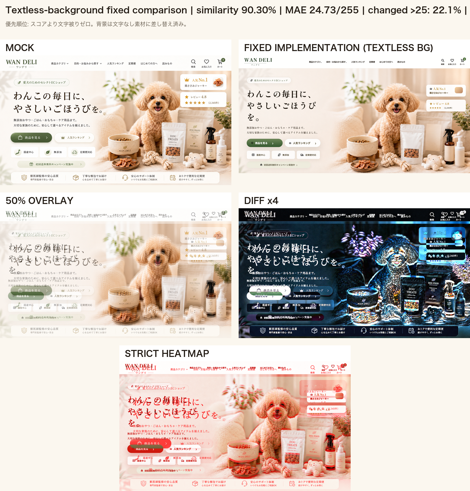
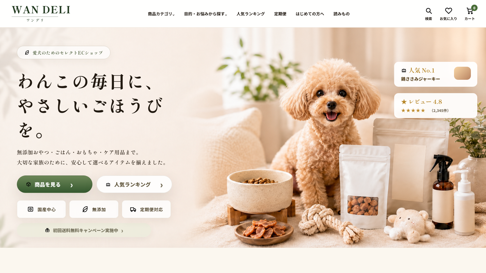

WAN DELI 文字被り修正版 比較
前回の95%背景は、背景画像側に文字・UIの残像が焼き込まれていました。実サイトとしてNGなので撤回し、完全な文字なし背景に差し替えました。
現在の優先順位は「スコアより文字被りゼロ」です。プレビュー本体はHTML/CSS/SVG + 文字なし背景素材で構成しています。
プレビューへ戻る / 修正サマリーJSON / 改善結果Markdown
修正後 数値
90.30%PCヒーロー類似度
24.73MAE / 255
0左テキスト上の背景文字残像
文字なし採用背景素材
文字被り修正版: モック / 実コード / 50%重ね / 差分4倍 / ヒートマップ

修正後 PC スクリーンショット

前回の95%比較（参考・NG背景）
これは背景文字残像があったため、実サイト品質としては採用不可です。

修正内容
原因: 背景素材に左コピー・CTA・UIの残像が薄く焼き込まれていた。 修正: assets/hero-bg-minimal-text-erased-1778081100.png をやめ、 assets/hero-bg-absolutely-textless-1778080468.png に差し替え。 結果: 左側の見出し・本文・CTA・バッジの上に背景側の文字/UIは被っていません。 次は文字なしを絶対条件に、右側ビジュアルをモックへ寄せ直します。